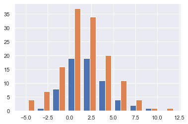
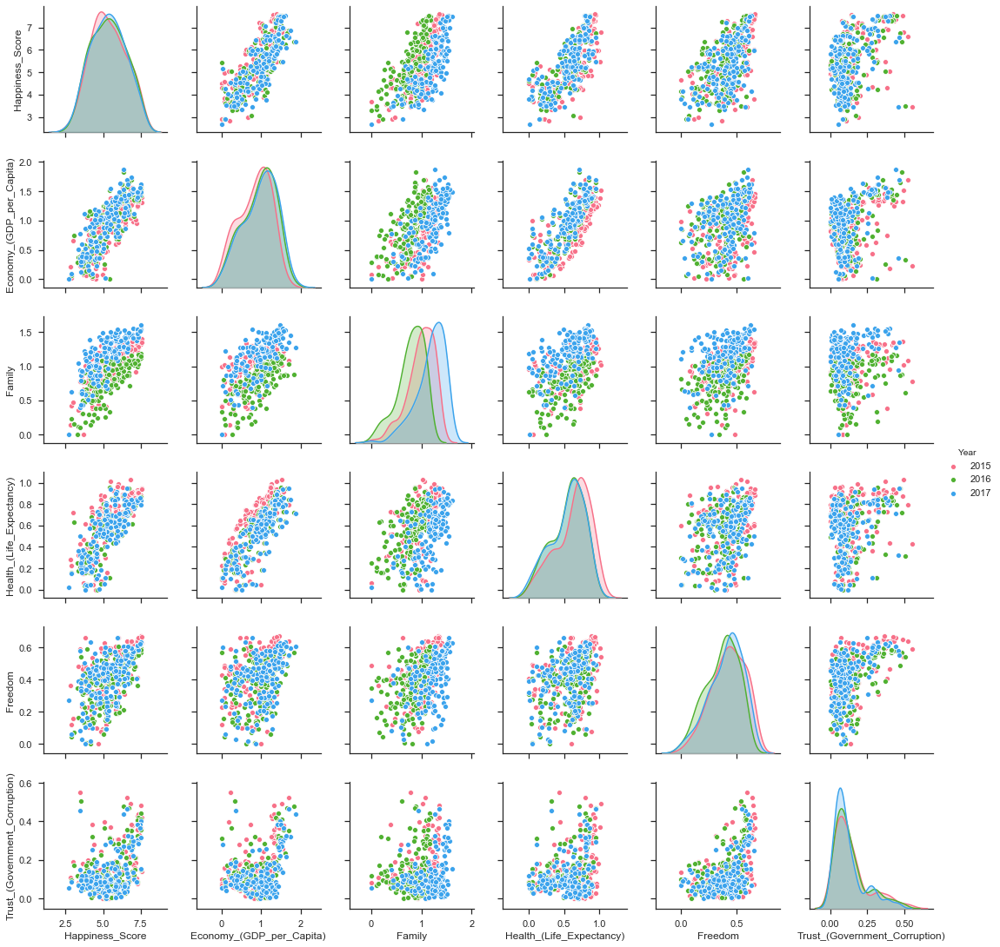

Python Exploratory Data Analysis and Plotting
Here some python introduction on how to work with data in the tabular form and visualization dummy scripts are saved.
Libraries
import matplotlib.pyplot as plt
%matplotlib inline
%config InlineBackend.figure_format = 'png'
import numpy as np
import pandas as pd
First of all you should display the default way through which Ipython Notebooks should display pandas dataframes
pd.set_option('display.max_rows', 500)
pd.set_option('display.max_columns', 500)
pd.set_option('display.width', 1000)
Analogously when working with numpy you could reach that by
np.set_printoptions(threshold=np.inf)
Data Wrangling
Creating data
Create data from numpy matrix
N = 30
x_1 = np.random.randn(N) * 3
x_2 = np.random.randn(N) * 3 + 2
x_3 = np.random.randn(N) * 3 + -2
mydat = pd.DataFrame (np.matrix ([x_1,x_2,x_3]).transpose ()) ## Without
## transpose
## it
## will
## simply
## be
## three
## rows
## with
## tons
## of
## column
mydat.head (5)
0 1 2
0 -0.391372 1.431659 -3.723554
1 -4.663749 2.916761 -5.312962
2 -5.138210 1.138734 -5.352694
3 5.594435 0.292630 -6.738569
4 2.328718 1.475208 -1.835453
Create data from two numpy arrays
here you need to flatten the arrays first
X = 2 * np.random.rand(100,1)
y = 4 +3 * X+np.random.randn(100,1)
mydat2 = pd.DataFrame ({'x':X.flatten(), 'y': y.flatten()})
mydat2.head(5)
x y
0 0.470371 3.531411
1 0.615700 8.621742
2 0.129762 5.510843
3 1.202375 8.534827
4 1.119286 5.962337
Create from List - You will use these basic dataframes in the following sections
df1 = pd.DataFrame([[1, 2, 3, 4],
[5, 6, 7, 8],
[9, 10, 11, 12]],
columns= ['a', 'b', 'c', 'd'])
df2 = pd.DataFrame([[1, 2, 3, 4],
[5, 6, 7, 8],
[9, 10, 11, 12]],
columns= ['e', 'f', 'g', 'h'])
df2.head(5)
e f g h 0 1 2 3 4 1 5 6 7 8 2 9 10 11 12
Dataframe with NaN
dfNaN = pd.DataFrame([[1, 2, 3, 4],
[5, np.nan, 7, 8],
[9, 10, np.nan, 12]],
columns= ['e', 'f', 'g', 'h'])
dfNaN.head(5)
e f g h 0 1 2.0 3.0 4 1 5 NaN 7.0 8 2 9 10.0 NaN 12
Work With SQL on top of Pandas
Note that it is possible to work with SQL on the top of pandas.
Check at the example below.
This is handy as you will see how to compute things both through pandas APIs and via plain SQL.
What follows is a 101 example of the thing.
from pandasql import sqldf
nba = lambda q: sqldf(q, globals())
q = \
"""
SELECT *
FROM df1
"""
nba (q)
Reshaping data
on numpy reshape -1
The criterion to satisfy for providing the new shape is that The new shape should be compatible with the original shape
Numpy allow us to give one of new shape parameter as -1 (eg: (2,-1) or (-1,3) but not (-1, -1)). It simply means that it is an unknown dimension and we want numpy to figure it out. And numpy will figure tchis by looking at the 'length of the array and remaining dimensions' and making sure it satisfies the above mentioned criteria
Now see the example.
import numpy as np
z = np.array([[1, 2, 3, 4],
[5, 6, 7, 8],
[9, 10, 11, 12]])
print (z.shape)
print (z.reshape (-1).shape)
print (z.reshape (-1,2).shape)
(3, 4) (12,) (6, 2)
On melting
Note that by melting you always remove all of the existing columns and you move to a two columned data frame. One containing the variables names and the other containing the values.
print (df1.head (5))
print (df2.head (5))
# See below. Melting always goes in 2 D
print()
print("Melted the previous 2 tables\n" + "-"*30)
print (pd.melt (df1).head (5))
a b c d 0 1 2 3 4 1 5 6 7 8 2 9 10 11 12 e f g h 0 1 2 3 4 1 5 6 7 8 2 9 10 11 12 Melted the previous 2 tables ------------------------------ variable value 0 a 1 1 a 5 2 a 9 3 b 2 4 b 6
On Pivoting
It spreads rows to columns.
This is the goes a bit in the opposite direction of melting.
The difference is though that each entry holds its spot and NaN for the other values are created.
So the indexing is quite different than the original as you might see from the below.
df3 = pd.melt (df1)
print("Melted Table\n" + "-"*30)
print (df3.head (20))
print("Pivoted Melted Table\n" + "-"*30)
print (df3.pivot(columns = 'variable', values = 'value').head (10))
Melted Table ------------------------------ variable value 0 a 1 1 a 5 2 a 9 3 b 2 4 b 6 5 b 10 6 c 3 7 c 7 8 c 11 9 d 4 10 d 8 11 d 12 Pivoted Melted Table ------------------------------ variable a b c d 0 1.0 NaN NaN NaN 1 5.0 NaN NaN NaN 2 9.0 NaN NaN NaN 3 NaN 2.0 NaN NaN 4 NaN 6.0 NaN NaN 5 NaN 10.0 NaN NaN 6 NaN NaN 3.0 NaN 7 NaN NaN 7.0 NaN 8 NaN NaN 11.0 NaN 9 NaN NaN NaN 4.0
On Concatenating
We tackle now column-based and row based concatenation.
It is the full outer join in SQL.
df3 = pd.concat ([df1, df2], axis = 0)
## This equals the Union Operator in SQL
print("Concat Along Row Axis\n" + "-"*48)
print (df3.head (6))
print("Full outer Join\n" + "-"*48)
## In SQL
q = \
"""
SELECT *
FROM df1
FULL OUTER JOIN df2 ON df1.a = df2.f
"""
print (nba (q))
## This adds data by column
print("Concat Along Column Axis\n" + "-"*48)
df3 = pd.concat ([df1, df2], axis = 1)
print (df3.head (6))
Concat Along Row Axis
------------------------------------------------
a b c d e f g h
0 1.0 2.0 3.0 4.0 NaN NaN NaN NaN
1 5.0 6.0 7.0 8.0 NaN NaN NaN NaN
2 9.0 10.0 11.0 12.0 NaN NaN NaN NaN
0 NaN NaN NaN NaN 1.0 2.0 3.0 4.0
1 NaN NaN NaN NaN 5.0 6.0 7.0 8.0
2 NaN NaN NaN NaN 9.0 10.0 11.0 12.0
Full outer Join
------------------------------------------------
a b c d e f g h
0 1.0 2.0 3.0 4.0 NaN NaN NaN NaN
1 5.0 6.0 7.0 8.0 NaN NaN NaN NaN
2 9.0 10.0 11.0 12.0 NaN NaN NaN NaN
3 NaN NaN NaN NaN 1.0 2.0 3.0 4.0
4 NaN NaN NaN NaN 5.0 6.0 7.0 8.0
5 NaN NaN NaN NaN 9.0 10.0 11.0 12.0
Concat Along Column Axis
------------------------------------------------
a b c d e f g h
0 1 2 3 4 1 2 3 4
1 5 6 7 8 5 6 7 8
2 9 10 11 12 9 10 11 12
New column
df2['i'] = df1['a'] + df2['e']
df2.columns
Index(['e', 'f', 'g', 'h', 'i'], dtype='object')
df2.head ()
e f g h i 0 1 2 3 4 2 1 5 6 7 8 10 2 9 10 11 12 18
Remove Columns
df2.drop ('i', axis = 1).head ()
e f g h 0 1 2 3 4 1 5 6 7 8 2 9 10 11 12
Use the df.drop function for that
df2.drop(columns=['h', 'i']).head ()
e f g 0 1 2 3 1 5 6 7 2 9 10 11
Column Renaming
df2.rename(columns = {'i':'sum'}).head ()
e f g h sum 0 1 2 3 4 2 1 5 6 7 8 10 2 9 10 11 12 18
Categorical Variables
Categorical data appear often. It is necessary for you to tackle them down correctly.
This is important for treating them as dummies in regression as well for plotting with facetwraps.
print(mydat.shape)
mydat.head ()
(30, 3)
0 1 2
0 3.285809 1.292891 -4.087278
1 -4.393832 0.898429 -9.398311
2 -0.959970 0.936827 -3.816866
3 3.423767 1.705746 2.511616
4 -3.398694 2.665577 -1.063232
mydat["category"] = np.repeat (range (6), 5)
mydat.info ()
<class 'pandas.core.frame.DataFrame'> RangeIndex: 30 entries, 0 to 29 Data columns (total 4 columns): # Column Non-Null Count Dtype --- ------ -------------- ----- 0 0 30 non-null float64 1 1 30 non-null float64 2 2 30 non-null float64 3 category 30 non-null int32 dtypes: float64(3), int32(1) memory usage: 972.0 bytes
To transform this into a category use:
mydat.category = mydat.category.astype ('category')
mydat.info ()
<class 'pandas.core.frame.DataFrame'> RangeIndex: 30 entries, 0 to 29 Data columns (total 4 columns): # Column Non-Null Count Dtype --- ------ -------------- ----- 0 0 30 non-null float64 1 1 30 non-null float64 2 2 30 non-null float64 3 category 30 non-null category dtypes: category(1), float64(3) memory usage: 1.0 KB
To view the category types
Inspect the relevant categorical variables. I.e. check what categories exists as values.
mydat.category.cat.categories
Index([0, 1, 2, 3, 4, 5], dtype='int32')
Create Categories with the Cut Operator - Create Categorical Ranges
Notice dataset not here… just pasted
The idea is to create categories out of the data bins as follows:
Bins = pd.cut(data_seq.r_platelet_admission, bins = 5).cat.categories
inspect = pd.concat([data_seq.loc[:, ['r_platelet_admission', 'r_platelet_24h']],
data_seq.loc[:, ['r_platelet_admission', 'r_platelet_24h']].apply(pd.cut, bins=Bins)],
axis = 1)
## so you see... very different intervals...
Notice however the issue that then at 24h you have just survivals on given categories
inspect.iloc[:,-1].value_counts()
(13.401, 535.8] 1217 (535.8, 1055.6] 1 (2095.2, 2615.0] 0 (1575.4, 2095.2] 0 (1055.6, 1575.4] 0 Name: r_platelet_24h, dtype: int64
Missing data
To check for missing values NaN
In order to check for NaN use the following
print (dfNaN.head ())
## check if there are null values for stream_id column
print ("\nContaining Null Entries: " +
str(dfNaN.isnull().values.any()) + "\n")
## get the null values
print("Get the Rows with Null Values:\n" + "-"*35)
print (dfNaN[np.array(dfNaN.isnull())])
##
print("\nGet Null Rows in specific Column:\n" + "-"*35)
print (dfNaN[np.array(dfNaN[['g']].isnull())])
e f g h 0 1 2.0 3.0 4 1 5 NaN 7.0 8 2 9 10.0 NaN 12 Containing Null Entries: True Get the Rows with Null Values: ----------------------------------- e f g h 1 5 NaN 7.0 8 2 9 10.0 NaN 12 Get Null Rows in specific Column: ----------------------------------- e f g h 2 9 10.0 NaN 12
Remove Rows/Columns with Missing Data
In order to delete missing data you can simply rely on the
import pandas as pd
from numpy import nan
df = pd.DataFrame({'name':['apple','banana','orange'],
'price':[1.95, 3.00, nan], 'inventory':[nan, 12, 23]})
print(df)
print ("\nAfter deleting Rows with missing values:\n" + "-"*35)
print(df.dropna())
name price inventory
0 apple 1.95 NaN
1 banana 3.00 12.0
2 orange NaN 23.0
After deleting missing values:
-----------------------------------
name price inventory
1 banana 3.0 12.0
In the above you eliminate the entire row where the missing value occurred.
The above is particular important when missing observations occurs randomly such that you might safely ignore individual observations without increasing the bias of your analysis given your data.
A second possibility, when dealing with missing data consists in
deleting entire features (i.e. columns). You can do that by setting
the argument 'columns' in your .dropna () method
print(df)
print ("\nAfter deleting Columns with missing values:\n" + "-"*45)
print(df.dropna(axis = 'columns'))
# Alternative - same effect
# print(df.dropna(axis = 1)) ## same as selecting columns
name price inventory
0 apple 1.95 NaN
1 banana 3.00 12.0
2 orange NaN 23.0
After deleting Columns with missing values:
---------------------------------------------
name
0 apple
1 banana
2 orange
Impute missing data
A different approach on handling missing data is to impute missing data. This means that instead of removing the data observations you try to replace them with some meaningful information.
This might be useful for instance when understanding that data are not missing at random and you might use the dependency on other features - i.e. a predictive model based on that - to impute missing variables.
Note that there is an entire class of method for performing that task. The performed interpolation might be more complex or less. I will possibly write a different notebook with the different imputation techniques.
Other simpler methods might involve taking simple features means as a data-filler or some simple analogous measure. An example in this sense might be:
from sklearn.impute import SimpleImputer
print("Original Data:\n" + "-" *35)
print (df)
features = ['price', 'inventory']
imp = SimpleImputer()
# Use .values attribute bc sklearn works with arrays rather than DataFrames
print("\nImputed Values:\n" + "-" *35)
imp.fit(df[features].values)
print(imp.transform(df[features].values))
print("\nReassign the Features with the Imputed Values:\n" + "-" *35)
df [['price', 'inventory']] = imp.transform(df[features].values)
print (df)
Original Data:
-----------------------------------
name price inventory
0 apple 1.95 NaN
1 banana 3.00 12.0
2 orange NaN 23.0
Imputed Values:
-----------------------------------
[[ 1.95 17.5 ]
[ 3. 12. ]
[ 2.475 23. ]]
Reassign the Features with the Imputed Values:
-----------------------------------
name price inventory
0 apple 1.950 17.5
1 banana 3.000 12.0
2 orange 2.475 23.0
Notice that in the above the simple average was taken to replace missing values.
Notice moreover how the standard sklearn API applies - i.e. the
.fit () and .transform () methods.
Check your specific sklearn post for it.
Treat Null Values in Categorical Variables
First of all adjust the data to include missing categorical data:
mydat['category'][0] = nan
mydat['category'][9] = nan
print("New Data:\n" + "-"*35)
print(mydat)
print("\nCategorical Data Mantained:\n")
print(mydat.info())
print("\nCategorical Data Does Not Include NaN:\n")
print(mydat.category.cat.categories)
New Data: ----------------------------------- 0 1 2 category 0 3.285809 1.292891 -4.087278 NaN 1 -4.393832 0.898429 -9.398311 0 2 -0.959970 0.936827 -3.816866 0 3 3.423767 1.705746 2.511616 0 4 -3.398694 2.665577 -1.063232 0 5 -5.981978 -2.330365 4.513986 1 6 3.563627 1.282886 -1.558001 1 7 3.911721 5.435864 -2.521728 1 8 -3.365184 5.509441 2.166765 1 9 4.376495 5.948424 -0.899942 NaN 10 0.711004 0.991445 -0.707667 2 11 -5.525879 7.641149 -1.207696 2 12 -2.263607 4.011692 -2.416089 2 13 -2.303355 2.281748 -3.973166 2 14 0.541773 7.803575 -8.016219 2 15 -2.086906 0.447170 -3.786559 3 16 -1.917900 3.561826 -2.660550 3 17 0.629063 1.705416 0.088963 3 18 3.571641 2.428314 -1.800404 3 19 -1.645434 -2.878642 -3.169414 3 20 -1.574994 0.464397 -3.304629 4 21 -5.727603 2.299280 -3.615124 4 22 0.815686 0.375027 1.368671 4 23 4.712558 1.563259 -3.259274 4 24 -5.063074 -4.301082 -3.433244 4 25 -1.914395 -4.043507 0.256975 5 26 -2.458269 5.153733 -1.631465 5 27 -0.858224 0.300057 -1.761264 5 28 -2.248453 0.772280 -1.619120 5 29 -0.326246 3.584091 -4.607798 5 Categorical Data Mantained: <class 'pandas.core.frame.DataFrame'> RangeIndex: 30 entries, 0 to 29 Data columns (total 4 columns): # Column Non-Null Count Dtype --- ------ -------------- ----- 0 0 30 non-null float64 1 1 30 non-null float64 2 2 30 non-null float64 3 category 28 non-null category dtypes: category(1), float64(3) memory usage: 1.0 KB None Categorical Data Does Not Include NaN: Index([0, 1, 2, 3, 4, 5], dtype='int32')
When data are categorical mathematical strategies for imputing the data are not effective.
A solution is the one of creating a separate category for it.
# Note you have to add the category first; before filling up the nan.
mydat.category = mydat.category.cat.add_categories('no_category')
mydat.loc[mydat.category[mydat.category.isnull()].index, "category"] = 'no_category'
print("New Data with new Category:\n" + "-" *35)
print(mydat)
print(mydat.category.cat.categories)
New Data with new Category: ----------------------------------- 0 1 2 category 0 3.285809 1.292891 -4.087278 no_category 1 -4.393832 0.898429 -9.398311 0 2 -0.959970 0.936827 -3.816866 0 3 3.423767 1.705746 2.511616 0 4 -3.398694 2.665577 -1.063232 0 5 -5.981978 -2.330365 4.513986 1 6 3.563627 1.282886 -1.558001 1 7 3.911721 5.435864 -2.521728 1 8 -3.365184 5.509441 2.166765 1 9 4.376495 5.948424 -0.899942 no_category 10 0.711004 0.991445 -0.707667 2 11 -5.525879 7.641149 -1.207696 2 12 -2.263607 4.011692 -2.416089 2 13 -2.303355 2.281748 -3.973166 2 14 0.541773 7.803575 -8.016219 2 15 -2.086906 0.447170 -3.786559 3 16 -1.917900 3.561826 -2.660550 3 17 0.629063 1.705416 0.088963 3 18 3.571641 2.428314 -1.800404 3 19 -1.645434 -2.878642 -3.169414 3 20 -1.574994 0.464397 -3.304629 4 21 -5.727603 2.299280 -3.615124 4 22 0.815686 0.375027 1.368671 4 23 4.712558 1.563259 -3.259274 4 24 -5.063074 -4.301082 -3.433244 4 25 -1.914395 -4.043507 0.256975 5 26 -2.458269 5.153733 -1.631465 5 27 -0.858224 0.300057 -1.761264 5 28 -2.248453 0.772280 -1.619120 5 29 -0.326246 3.584091 -4.607798 5 Index([0, 1, 2, 3, 4, 5, 'no_category'], dtype='object')
Or, more elegantly.
mydat.category = mydat.category.cat.add_categories('no_category').fillna('no_category')
This will be useful as you create a new feature and that might reveal some patterns in null values.
Duplicates Handling
You can generate an array of duplicates boolean by leveraging .duplicated () method:
romeo = pd.DataFrame({'a': [1,1,1,3], 'b' : [2,2,2,3]})
print(romeo)
print("\nCheck if records already existing:\n" + "-" *40)
print(romeo.duplicated())
print("\nSelect all duplicated Rows:\n" + "-" *40)
print(romeo[romeo.duplicated()])
a b 0 1 2 1 1 2 2 1 2 3 3 3 Check if records already existing: ---------------------------------------- 0 False 1 True 2 True 3 False dtype: bool Select all duplicated Rows: ---------------------------------------- a b 1 1 2 2 1 2
Summarize the data
Describe the Data
df1.describe ()
a b c d
count 3.0 3.0 3.0 3.0
mean 5.0 6.0 7.0 8.0
std 4.0 4.0 4.0 4.0
min 1.0 2.0 3.0 4.0
25% 3.0 4.0 5.0 6.0
50% 5.0 6.0 7.0 8.0
75% 7.0 8.0 9.0 10.0
max 9.0 10.0 11.0 12.0
Data Wrangling
General Note
Often it makes sense to create a dictionary for selecting the columns of the dataframes by index and get the corresponding name.
It is just one among the many options in order to work in an ordered way.
Sort Multiple Variables in Data Frames
print (df1)
print (df1.sort_values(['c', "d"], ascending=[False, False], inplace=False))
print (df1)
df1.sort_values(['c', "d"], ascending=[False, False], inplace=True) ## you
## see
## that
## with
## inplace
## you
## overwrite
## the
## existing
## table
print (df1)
df1.sort_values(['c', "d"], ascending=[True, True], inplace=True)
a b c d 0 1 2 3 4 1 5 6 7 8 2 9 10 11 12 a b c d 2 9 10 11 12 1 5 6 7 8 0 1 2 3 4 a b c d 0 1 2 3 4 1 5 6 7 8 2 9 10 11 12 a b c d 2 9 10 11 12 1 5 6 7 8 0 1 2 3 4
Column Naming
- Set the name of the columns
mydat.columns = ["nomean", "posmean", "negmean"]
mydat.columns
Index(['nomean', 'posmean', 'negmean'], dtype='object')
on the difference between .iloc and .loc and at
-
.at
This searches for a very specific entry.
.iat: uses the strict position in the matrix. I.e. it takes numeric values..at: search by index and column names. I.e. you enter the names.print (df1) print (df1.at[0, 'd'])a b c d 2 9 10 11 12 1 5 6 7 8 0 1 2 3 4 4
Note that you can get the same entry by numeric value by the following:
df1.iat[2,3]
4
-
.iloc
This works along the lines of the
.iat, i.e. you work by index. The difference is that you can select multiple indices. I.e. an array of them.df.head (5)
## Some examples for slicing the data print (df.iloc[0,1:]) print (df.iloc[:,1:]) print (df.iloc[:2,1:])price 1.95 inventory 17.5 Name: 0, dtype: object price inventory 0 1.950 17.5 1 3.000 12.0 2 2.475 23.0 price inventory 0 1.95 17.5 1 3.00 12.0
-
.loc
df.head (5)
name price inventory 0 apple 1.950 17.5 1 banana 3.000 12.0 2 orange 2.475 23.0df.loc [[0,2], ['price', 'name']]
price name 0 1.950 apple 2 2.475 orange
Note that the following works as well:
print (df.loc [:, ['price', 'name']]) print (df.loc [[0,2], :]) ## The following would throw an error. ## print (df.at [0, ['price', 'name']]) ## Note that multi-entries slicing is not possible with atprice name 0 1.950 apple 1 3.000 banana 2 2.475 orange name price inventory 0 apple 1.950 17.5 2 orange 2.475 23.0 -
slicing the data without helper api method
-
get by row
You can use numerical entries for slicing the data.
print (df1) print (df1 [0:3]) ## it works on the axis = 0. Can just slice like this.a b c d 2 9 10 11 12 1 5 6 7 8 0 1 2 3 4 a b c d 2 9 10 11 12 1 5 6 7 8 0 1 2 3 4
-
get by column
print (df1[['a', 'b']].head (3)) ## The below does not work. ## Natively you can just slice between one of the two dimensions ## there is a different syntax explained in the next session for it. ## print (df1[0:3, ['a', 'b']].head (3))a b 2 9 10 1 5 6 0 1 2
-
get by row and column
The way to select rows and columns is to simply apply sequentially the built-in methods.
It is nothing else than a chain rule.
print (df1) # mydat[['nomean', 'posmean']][::2]a b c d 2 9 10 11 12 1 5 6 7 8 0 1 2 3 4
print(df1[['a', 'b']] [0:1]) ## note that the row indexing works by ## position not name, in that case you ## would have to work with the .loc ## method
a b 2 9 10
-
get by row
Filtering Data
filter through booleans
print (df1)
filt = df1.b >= 6
print ()
print (df1[['a', 'b']][filt]) ## You can pass a boolean
## condition on the row
## indeces
## The following raises an error
## print (df1.iloc[filt, 0]) ## You can pass a boolean
a b c d 2 9 10 11 12 1 5 6 7 8 0 1 2 3 4 a b 2 9 10 1 5 6
Note that you can work with iloc and a boolean filtering condition
by passing it to the iloc operator.
print (np.array (filt))
print (df1.iloc[np.array (filt) , 0]) ## You can pass a boolean
[ True True False] 2 9 1 5 Name: a, dtype: int64
You can as well create the boolean conditions with an apply function.
# reading the data
series = [('Stranger Things', 3, 'Millie'),
('Game of Thrones', 8, 'Emilia'),
('La Casa De Papel', 4, 'Sergio'),
('Westworld', 3, 'Evan Rachel'),
('Stranger Things', 3, 'Millie'),
('La Casa De Papel', 4, 'Sergio')]
# Create a DataFrame object
dfObj = pd.DataFrame(series, columns=['Name', 'Seasons', 'Actor'])
df = pd.DataFrame(dfObj)
df.iloc[np.array (df.Seasons.apply (lambda x: x % 2 == 0)), :]
Name Seasons Actor
1 Game of Thrones 8 Emilia
2 La Casa De Papel 4 Sergio
5 La Casa De Papel 4 Sergio
filter through regex
df.filter(regex='ing|Date')
Date Running Chasing Climbing Foraging
0 10142018 False False False False
1 10062018 True False False False
2 10102018 False False True False
3 10182018 False False True False
4 10182018 False False False False
… … … … … …
3018 10072018 False False False True
3019 10132018 False False False True
3020 10122018 False False False True
3021 10102018 False False False False
3022 10122018 False False False True
Group By Operations
Create fictitious groups
lis = [[5]*10, [0] * 10, [-5] * 10]
mydat ['group'] = list (np.concatenate(lis).flat)
print(mydat.head (30))
print(mydat.info()) ## note that the above is not a category.
0 1 2 category group 0 3.285809 1.292891 -4.087278 no_category 5 1 -4.393832 0.898429 -9.398311 0 5 2 -0.959970 0.936827 -3.816866 0 5 3 3.423767 1.705746 2.511616 0 5 4 -3.398694 2.665577 -1.063232 0 5 5 -5.981978 -2.330365 4.513986 1 5 6 3.563627 1.282886 -1.558001 1 5 7 3.911721 5.435864 -2.521728 1 5 8 -3.365184 5.509441 2.166765 1 5 9 4.376495 5.948424 -0.899942 no_category 5 10 0.711004 0.991445 -0.707667 2 0 11 -5.525879 7.641149 -1.207696 2 0 12 -2.263607 4.011692 -2.416089 2 0 13 -2.303355 2.281748 -3.973166 2 0 14 0.541773 7.803575 -8.016219 2 0 15 -2.086906 0.447170 -3.786559 3 0 16 -1.917900 3.561826 -2.660550 3 0 17 0.629063 1.705416 0.088963 3 0 18 3.571641 2.428314 -1.800404 3 0 19 -1.645434 -2.878642 -3.169414 3 0 20 -1.574994 0.464397 -3.304629 4 -5 21 -5.727603 2.299280 -3.615124 4 -5 22 0.815686 0.375027 1.368671 4 -5 23 4.712558 1.563259 -3.259274 4 -5 24 -5.063074 -4.301082 -3.433244 4 -5 25 -1.914395 -4.043507 0.256975 5 -5 26 -2.458269 5.153733 -1.631465 5 -5 27 -0.858224 0.300057 -1.761264 5 -5 28 -2.248453 0.772280 -1.619120 5 -5 29 -0.326246 3.584091 -4.607798 5 -5 <class 'pandas.core.frame.DataFrame'> RangeIndex: 30 entries, 0 to 29 Data columns (total 5 columns): # Column Non-Null Count Dtype --- ------ -------------- ----- 0 0 30 non-null float64 1 1 30 non-null float64 2 2 30 non-null float64 3 category 30 non-null category 4 group 30 non-null int32 dtypes: category(1), float64(3), int32(1) memory usage: 1.3 KB None
Compute the sum for each group / category. Both work with the groupby method.
print("Sum per Group:\n" + "-"*40)
print(mydat.iloc[:, [0, 1, 2, 4]].groupby('group').sum())
print("Median per Group:\n" + "-"*40)
print(mydat.iloc[:, [0, 1, 2, 4]].groupby('group').median())
print("Median per Category:\n" + "-"*40)
print(mydat.iloc[:, [0, 1, 2, 3]].groupby('category').median())
Sum per Group: ---------------------------------------- 0 1 2 group -5 -14.643014 6.167534 -21.606271 0 -10.289600 27.993692 -27.648801 5 0.461761 23.345720 -14.152991 Median per Group: ---------------------------------------- 0 1 2 group -5 -1.744694 0.618339 -2.510269 0 -1.781667 2.355031 -2.538320 5 1.162920 1.499319 -1.310616 Median per Category: ---------------------------------------- 0 1 2 category 0 -2.179332 1.321287 -2.440049 1 0.099221 3.359375 0.304382 2 -2.263607 4.011692 -2.416089 3 -1.645434 1.705416 -2.660550 4 -1.574994 0.464397 -3.304629 5 -1.914395 0.772280 -1.631465 no_category 3.831152 3.620658 -2.493610
Side note: Series vs. Dataframe
Interesting the df.column_name gives you a Series while the
df.loc[: [column_name]], gives you a dataframe.
Keep this data type difference in mind. It will allow you to move faster across the data.
Cut vs. qcut
Note that the difference is well explained in this post.
I.e. the cut creates the bins for the categorical assignment with
equally distanced bins across the value ranges.
In contrast with qcut, the bins will be chosen so that you have
the same number of records in each bin. You have 30 records, so
should have 6 in each bin.
pd.qcut(data_seq.loc[:,['r_hematocrite_admission']].squeeze(), 5).cat.categories
To make row-wise modification - Apply Function
In order to apply a function sequentially to each entry in a column
dataframe you can use the apply function on pandas dataframe.
For instance for the following dataframe
cust_id.head()
Then you could specify a function return the years since the date in column dob
def age(x):
datetime_object = datetime.strptime(x, '%m/%d/%y')
datetime_now = datetime.today()
return datetime_now.year - datetime_object.year
Finally you can pass the apply function to each row of your
pandas dataframe column by
print(cust_id['dob'].apply (lambda row: age(row)))
cust_id['age'] = cust_id['dob'].apply (lambda row: age(row))
cust_id.head()
dob 1 2 3 4 5 6 \ 0 07/30/98 1 Todd Kasen South Carolina m united_states 1 04/12/89 2 Garza Ensley None f singapore 2 09/12/97 3 Carey Lillian Alabama f united_states 3 01/28/99 4 Christensen Beau New York m united_states 4 03/23/98 5 Gibson Ernesto None m singapore age 22 31 23 21 22
General Way to Tackle Down the Dataset
For the next sections I will use the following new dataset
import re
import numpy as np
import pandas as pd
df = pd.read_csv("~/Desktop/Learning/AI_workflow_Coursera/Visualization/world-happiness.csv",index_col=0)
print("df: {} x {}".format(df.shape[0],df.shape[1]))
## clean up the column names and remove some
df.columns = [re.sub("\s+","_",col) for col in df.columns.tolist()]
df.head(n=4)
Country Region Happiness_Rank ... Generosity Dystopia_Residual Year
0 Afghanistan Southern Asia 153.0 ... 0.36510 1.95210 2015
1 Albania Central and Eastern Europe 95.0 ... 0.14272 1.89894 2015
2 Algeria Middle East and Northern Africa 68.0 ... 0.07822 2.43209 2015
3 Angola Sub-Saharan Africa 137.0 ... 0.12344 1.94939 2015
[4 rows x 12 columns]
- view a review of all of the null values
## missing values summary
print("Missing Value Summary\n{}".format("-"*35))
print(df.isnull().sum(axis = 0))
Missing Value Summary ----------------------------------- Country 0 Region 0 Happiness_Rank 25 Happiness_Score 25 Economy_(GDP_per_Capita) 25 Family 25 Health_(Life_Expectancy) 25 Freedom 25 Trust_(Government_Corruption) 25 Generosity 25 Dystopia_Residual 25 Year 0 dtype: int64
-
pivot data frame and create aggregate measures for them (similar to mutate in
dplyr)columns_to_show = ["Happiness_Score","Health_(Life_Expectancy)"] pd.pivot_table(df, index= 'Year',values=columns_to_show,aggfunc='mean').round(3) - select all columns but one
df = data.loc[ : , data.columns != 'student_gender']
- groupby
analogously to the previous version one can compute aggregated measures using the groupby command
df.groupby(['Year'])[columns_to_show].mean().round(3)
Aggregating by multiple columns is straightforward.
pd.pivot_table(df, index = ['Region', 'Year'], values=columns_to_show).round(3)
## or
# df.groupby(['Region', 'Year'])[columns_to_show].mean().round(3)
Finally you can pass a column entry instead of displaying the results as above. This is more user friendly in case you might have to merge the results into other data frames.
pd.pivot_table(df,index='Region',columns='Year',values="Happiness_Score")
- create factor variables out of continuous variables through the
cutmethod.
pd.cut (df['Happiness_Rank'], bins = 4)
- append a column to a dataframe
pd.concat(objs = [df, pd.cut (df['Happiness_Rank'], bins = 4)],
axis = 1)
Example of SQL for getting the sum of the price in each Country
from pandasql import sqldf
nba = lambda q: sqldf(q, globals())
q = \
"""
SELECT country, sum(price) as tot_revenue
FROM df
GROUP BY country
ORDER BY tot_revenue DESC
"""
nba (q)
Sparse Matrices
It is essential for data engineers and data scientists to know how to
work with sparse matrices. This are matrices with many 0 entries and
just a few non-zero entries.
Instead of representing these kind of matrices in their dense
representation i.e. with a bunch of 0 entries you might save the
information in a more compressed way. This will allow to save on
memory on your machines and to effectively work with huge matrices.
Sparse matrices are moreover important for the development of ML jobs. The idea is that once you found a well performing ML model you might create data pipelines that extract transform and load data to your ML model in the desired shape.
At the beginning, when you are exploring the data and trying to come up with a meaningful model it does not make sense to create such data pipelines as the job of coming up with them might be time-consuming and you might end up with no business value added from your ML application.
It is therefore important to postpone the creation of such time consuming tasks at the end. when you have a production ready ML model.
Before of that it is advisable to leverage dumps of data and to explore your system through them. In this sense sparse matrices are especially beneficial when data can be efficiently represented through them. These allow you to store a huge amount of data due to their efficient memory management - i.e. by saving just the relevant portion of your data -.
In python you can work with sparse matrices via:
import numpy as np
from scipy import sparse
Notice that a matrix, is said to be sparse if more than 50% of its entries are 0.
For instance the following matrix is sparse
A = np.random.randint(0,2,100000).reshape(100,1000)
sparcity = 1.0 - (np.count_nonzero(A) / A.size)
print(round(sparcity,4))
0.4974
There are essentially four types of sparse matrices used for computation.
CSC (Compressed Sparse Column) and CSR (Compressed Sparse Row) are more compact and efficient, but difficult to construct "from scratch".
Coo (Coordinate) and DOK (Dictionary of Keys) are easier to construct, and can then be converted to CSC or CSR via matrix.tocsc() or matrix.tocsr().
CSC is more efficient at accessing column-vectors or column operations, generally, as it is stored as arrays of columns and their value at each row.
CSR matrices are the opposite; stored as arrays of rows and their values at each column, and are more efficient at accessing row-vectors or row operations.
A = np.random.poisson(0.3, (10,100))
B = sparse.coo_matrix(A)
C = B.todense()
print("A",type(A),A.shape,"\n"
"B",type(B),B.shape,"\n"
"C",type(C),C.shape,"\n")
A <class 'numpy.ndarray'> (10, 100) B <class 'scipy.sparse.coo.coo_matrix'> (10, 100) C <class 'numpy.matrix'> (10, 100)
You see that you can transform back and forth from dense matrices to sparse matrices.
Coo sparse matrix built from the COOrdinates and values of the non-zero entries.
print(B)
(0, 1) 2 (0, 2) 1 (0, 6) 1 (0, 8) 1 (0, 9) 1 (0, 10) 1 (0, 13) 1 (0, 18) 1 (0, 19) 2 (0, 21) 1 (0, 23) 1 (0, 24) 2 (0, 29) 1 (0, 31) 1 (0, 34) 1 (0, 42) 1 (0, 50) 1 (0, 51) 1 (0, 62) 3 (0, 69) 1 (0, 70) 1 (0, 71) 2 (0, 72) 1 (0, 78) 1 (0, 80) 1 : : (9, 8) 1 (9, 9) 2 (9, 11) 1 (9, 24) 2 (9, 26) 2 (9, 27) 1 (9, 37) 1 (9, 38) 1 (9, 44) 1 (9, 45) 1 (9, 49) 1 (9, 50) 1 (9, 51) 1 (9, 55) 1 (9, 57) 1 (9, 58) 1 (9, 59) 1 (9, 62) 1 (9, 66) 1 (9, 74) 1 (9, 79) 3 (9, 80) 1 (9, 82) 1 (9, 92) 1 (9, 96) 1
B = sparse.csc_matrix(A)
print(B)
(6, 0) 2 (0, 1) 2 (3, 1) 1 (0, 2) 1 (8, 2) 1 (5, 3) 1 (1, 4) 1 (9, 4) 1 (5, 5) 1 (6, 5) 1 (0, 6) 1 (1, 6) 1 (6, 6) 1 (9, 6) 1 (3, 7) 1 (5, 7) 1 (7, 7) 1 (8, 7) 1 (9, 7) 1 (0, 8) 1 (6, 8) 1 (9, 8) 1 (0, 9) 1 (1, 9) 1 (3, 9) 2 : : (3, 90) 2 (6, 90) 1 (7, 90) 1 (8, 90) 1 (0, 91) 1 (2, 91) 1 (4, 91) 1 (5, 91) 1 (6, 92) 1 (7, 92) 1 (9, 92) 1 (8, 93) 1 (0, 94) 1 (1, 94) 1 (4, 94) 1 (0, 95) 1 (1, 95) 1 (3, 95) 1 (5, 95) 1 (5, 96) 1 (9, 96) 1 (1, 97) 1 (4, 98) 1 (1, 99) 1 (3, 99) 1
See that the above respects the column array storage. I.e. the non-zero coordinates are returned column by column.
Like the CSC format there is a CSR format to account for data that repeat along the rows
B = sparse.csr_matrix(A)
print(B)
(0, 1) 2 (0, 2) 1 (0, 6) 1 (0, 8) 1 (0, 9) 1 (0, 10) 1 (0, 13) 1 (0, 18) 1 (0, 19) 2 (0, 21) 1 (0, 23) 1 (0, 24) 2 (0, 29) 1 (0, 31) 1 (0, 34) 1 (0, 42) 1 (0, 50) 1 (0, 51) 1 (0, 62) 3 (0, 69) 1 (0, 70) 1 (0, 71) 2 (0, 72) 1 (0, 78) 1 (0, 80) 1 : : (9, 8) 1 (9, 9) 2 (9, 11) 1 (9, 24) 2 (9, 26) 2 (9, 27) 1 (9, 37) 1 (9, 38) 1 (9, 44) 1 (9, 45) 1 (9, 49) 1 (9, 50) 1 (9, 51) 1 (9, 55) 1 (9, 57) 1 (9, 58) 1 (9, 59) 1 (9, 62) 1 (9, 66) 1 (9, 74) 1 (9, 79) 3 (9, 80) 1 (9, 82) 1 (9, 92) 1 (9, 96) 1
See that the above respects the row array storage. I.e. the non-zero coordinates are returned row by row.
Notice: that many np.<methods> used for performing matrix operations do not work on sparse matrices. You might refer to this link for checking on how to deal with that. A solution proposed is to transform the sparse matrix in an array.
Finally, it is easy to populate a sparse matrix by
rows = [0,1,2,8] ## coodinates
cols = [1,0,4,8]
vals = [1,2,1,4]
A = sparse.coo_matrix((vals, (rows, cols)))
print(A.todense())
print()
print(A.tocsr())
[[0 1 0 0 0 0 0 0 0] [2 0 0 0 0 0 0 0 0] [0 0 0 0 1 0 0 0 0] [0 0 0 0 0 0 0 0 0] [0 0 0 0 0 0 0 0 0] [0 0 0 0 0 0 0 0 0] [0 0 0 0 0 0 0 0 0] [0 0 0 0 0 0 0 0 0] [0 0 0 0 0 0 0 0 4]] (0, 1) 1 (1, 0) 2 (2, 4) 1 (8, 8) 4
you can finally stack two sparse matrices, be it horizontally or vertically together.
C = sparse.csr_matrix(np.array([0,1,0,0,2,0,0,0,1]).reshape(1,9))
print(A.shape,C.shape)
print("adding horizontally/by row")
D = sparse.vstack([A,C])
print(D.todense())
print("adding vertically/by column")
D = sparse.hstack([A,C.reshape(9,1)])
print(D.todense())
(9, 9) (1, 9) adding horizontally [[0 1 0 0 0 0 0 0 0] [2 0 0 0 0 0 0 0 0] [0 0 0 0 1 0 0 0 0] [0 0 0 0 0 0 0 0 0] [0 0 0 0 0 0 0 0 0] [0 0 0 0 0 0 0 0 0] [0 0 0 0 0 0 0 0 0] [0 0 0 0 0 0 0 0 0] [0 0 0 0 0 0 0 0 4] [0 1 0 0 2 0 0 0 1]] adding vertically [[0 1 0 0 0 0 0 0 0 0] [2 0 0 0 0 0 0 0 0 1] [0 0 0 0 1 0 0 0 0 0] [0 0 0 0 0 0 0 0 0 0] [0 0 0 0 0 0 0 0 0 2] [0 0 0 0 0 0 0 0 0 0] [0 0 0 0 0 0 0 0 0 0] [0 0 0 0 0 0 0 0 0 0] [0 0 0 0 0 0 0 0 4 1]]
MatplotLib
plt.plot(x_1, c = "lightblue", ls = '--', marker = "o",
ms = 6, label ="nomean")
plt.plot(x_2, c = "darkorange", ls = '--', marker = "s",
ms = 6, label ="posmean") # ms = marker size
plt.plot(x_3, c = "lightgreen", ls = '--', marker = "^",
ms = 6, label ="negmean")
plt.legend(loc = 'upper right',bbox_to_anchor = (1,1))
plt.xticks(list(range(20)), rotation = 'vertical') # sets the ticks on
# x-axis and puts
# them vertically.

- stacked histograms via matplotlib
plt.hist([mydat[mydat.bitwise == True].nomean,
mydat[mydat.bitwise == False].posmean])

plt.hist([mydat[mydat.bitwise == True].nomean,
mydat[mydat.bitwise == False].posmean],
stacked = True)

Seaborn
sns.distplot (mydat['nomean'])

mydat.head ()
g = sns.lmplot(x="posmean", y="sum", data = mydat)

import statsmodels
g = sns.lmplot(x="posmean", y="sum", col="bitwise", hue="bitwise", data=mydat,
y_jitter=.02, truncate=False)

To further inspect different visualization techniques check at the seaborn page.
g = sns.lmplot(x="posmean", y="sum", data = mydat,
hue = 'bitwise', fit_reg = False)

- joinplot for inspecting the density of two functions
g = sns.jointplot (data = mydat, x = 'posmean', y = 'negmean')
g = sns.jointplot (data = mydat, x = 'posmean', y = 'negmean', kind = 'hex')
sns.jointplot (data = mydat, x = 'posmean', y = 'negmean'). \
plot_joint(sns.kdeplot, zorder=3, n_levels=6) ## add isolines

- kdeplot without data
sns.kdeplot (mydat.posmean, mydat.nomean)

To draw the isolines via colour scale use the shade bool
sns.kdeplot (mydat.posmean, mydat.nomean,
shade = True)

To still see the grids
sns.kdeplot (mydat.posmean, mydat.nomean,
shade = True, shade_lowest = False)

- change the background style
sns.set(style="darkgrid")
sns.kdeplot (mydat.posmean, mydat.nomean)

- create subplots
## specify your R par(mfrow=c(x,y))
f, axes = plt.subplots(1,2, figsize = (12, 6))
k1 = sns.kdeplot(mydat.posmean, mydat.nomean, ax = axes[0], cmap = 'Greens')
k2 = sns.kdeplot(mydat.posmean, mydat.negmean, ax = axes[1], cmap = 'Greens')

with more columns the axis index becomes more complex.
## specify your R par(mfrow=c(x,y))
f, axes = plt.subplots(2,2, figsize = (12, 6))
k1 = sns.kdeplot(mydat.posmean, mydat.nomean, ax = axes[0,1], cmap = 'Greens')
k2 = sns.kdeplot(mydat.posmean, mydat.negmean, ax = axes[1,0], cmap = 'Greens')

- violinplot
same information as boxplot. on top of it you have the width that tells you how many datapoints falls into each level for each category
k1 = sns.violinplot(data = mydat, x = 'bitwise', y = 'nomean')
- facet grids
this is useful when plotting many variables and inspecting their properties for different categories.
you might do that as follows
## create some more categories
rand = np.random.randn(200)
category = ['2008' if x > 0 else '2009' for x in rand]
mydat['year'] = pd.Series(category).astype('category')
category = ['posExtreme' if x > 2 else 'normal' if x < 2 else 'negExtreme' for x in rand]
mydat['extreme'] = pd.Series(category).astype('category')
mydat.info()
set(['posExtreme' if x > 2 else 'normal' if x < -2 else 'negExtreme' for x in rand])
g = sns.FacetGrid(data = mydat, row = 'year', col = 'extreme', hue = 'year')
g.map(plt.scatter, x = 'nomean', y = 'posmean')

- pairs plot
sns.set(style="ticks", color_codes=True)
## make a pair plot
columns = ['Happiness_Score','Economy_(GDP_per_Capita)', 'Family', 'Health_(Life_Expectancy)',
'Freedom', 'Trust_(Government_Corruption)']
axes = sns.pairplot(df,vars=columns,hue="Year",palette="husl")

- correlation matrix plot
# Compute the correlation matrix
corr = df.corr()
# Generate a mask for the upper triangle
mask = np.triu(np.ones_like(corr, dtype=np.bool))
# Set up the matplotlib figure
f, ax = plt.subplots(figsize=(11, 9))
# Generate a custom diverging colormap
cmap = sns.diverging_palette(220, 10, as_cmap=True)
# Draw the heatmap with the mask and correct aspect ratio
sns.heatmap(corr, mask=mask, cmap=cmap, vmax=.3, center=0,
square=True, linewidths=.5, cbar_kws={"shrink": .5})

- On PairGrid
This is a very interesting option to compute different visualization according to pair plots
df = pd.read_csv("~/Desktop/Learning/AI_workflow_Coursera/Visualization/Visualization_2.csv")
df.columns
df = df.dropna(axis= 0)
g = sns.PairGrid(df[['age', 'num_streams', 'is_subscriber']], hue = 'is_subscriber')
g = g.map_upper(sns.scatterplot)
g = g.map_lower(sns.kdeplot, colors="C0")
g = g.map_diag(sns.kdeplot, lw=2).add_legend()

You can then specify pretty much everything that you want on the upper and lower diagonal matrix entries. Check at this link to get inspiration.
You might even combine pyplot and seaborn elements
g = sns.PairGrid(df[['age', 'num_streams', 'is_subscriber']], hue = 'is_subscriber')
g = g.map_upper(sns.scatterplot, alpha = 0.3)
g = g.map_lower(sns.kdeplot)
g = g.map_diag(plt.hist, lw=2, alpha = 0.2)

- ordered categorical plot
In case that you have a category that you want to keep ordered when plotting you can achieve this as follows
cat_dtype = pd.api.types.CategoricalDtype(
categories=[x for x in range(1,13)], ordered=True)
# notice the conversion to int first as the dtype was object and the
# assignment to the int in the provided list was not functioning
# automatically
df_rev_year["month"] = df_rev_year.month.astype('int').astype(cat_dtype)
- insert easily a plot with single index in order to plot quickly via looping
## specify your R par(mfrow=c(x,y))
f, axes = plt.subplots(figsize = (12, 6))
idx = 1
for country in max_countries:
plt.subplot (2, tot_countries/2, idx)
k1 = sns.distplot(df_aggregate[df_aggregate.country == country][["revenue"]],
kde = False ,fit = stats.lognorm)
k1.title.set_text(country)
idx += 1
plt.show ()